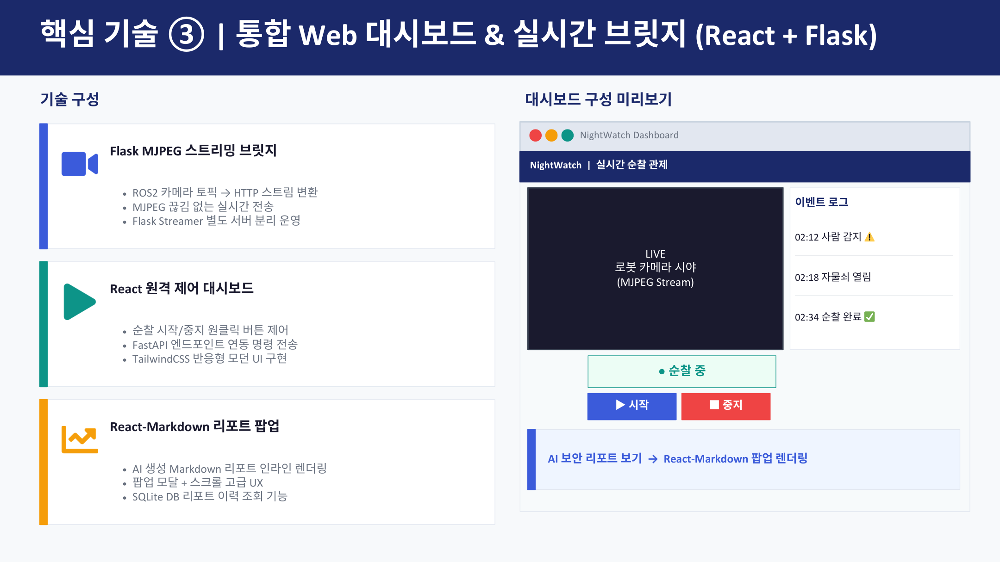
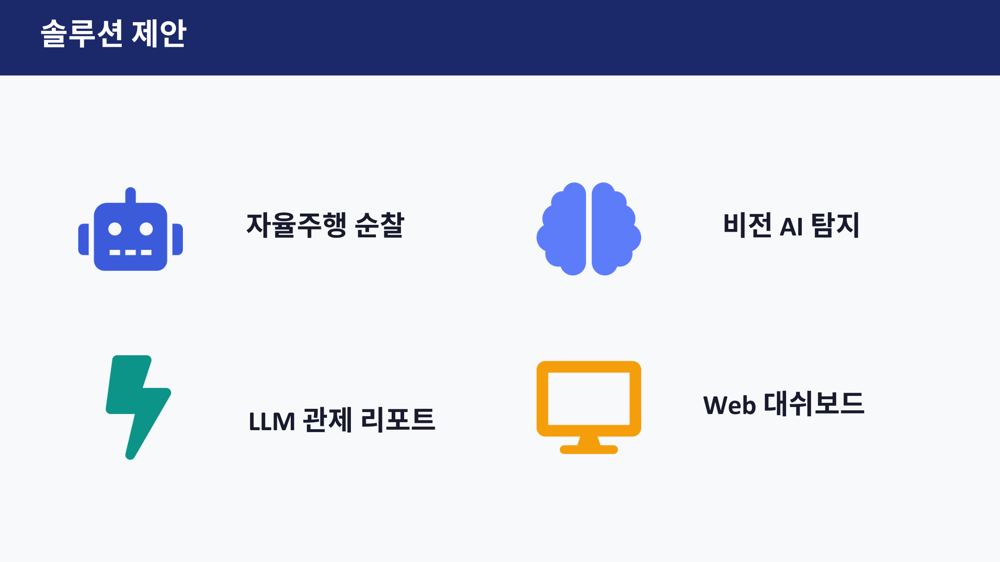
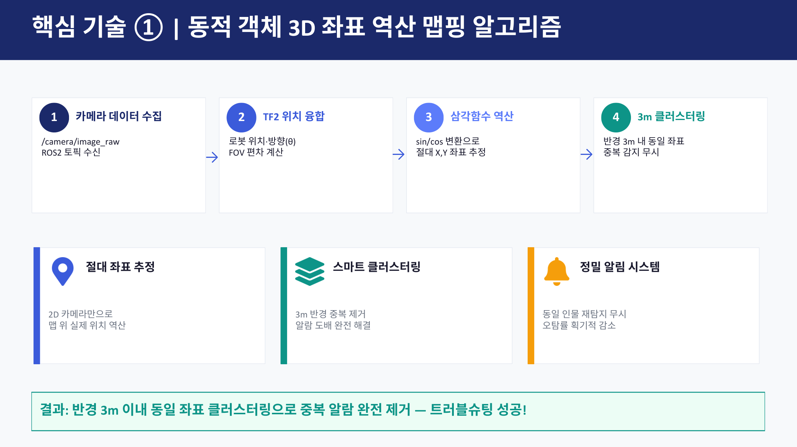
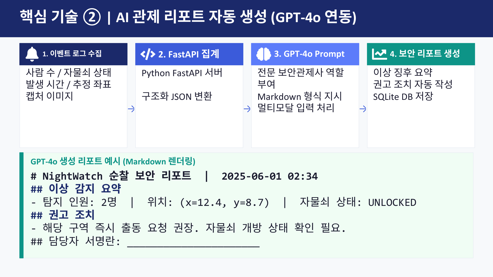
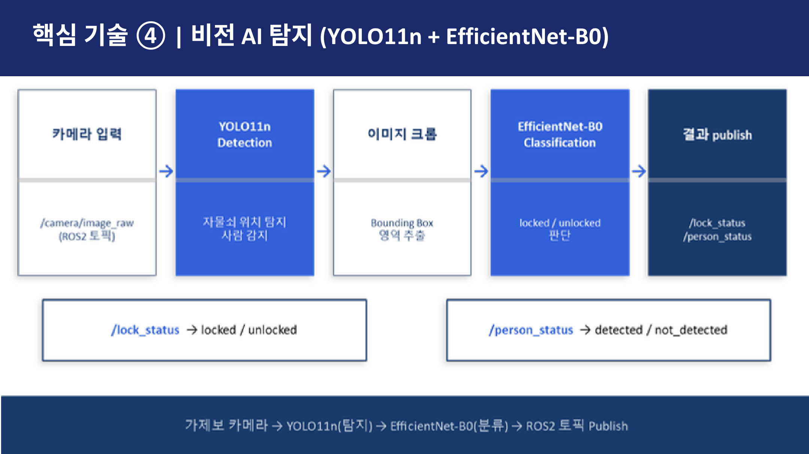

Project 03
NightWatch 야간 자율순찰 시스템
자율주행 로봇, 비전 AI 탐지, GPT-4o-mini 관제 리포트, Web 대시보드를 연결해 야간 사각지대의 이상 상황을 자동 감지하고 기록하는 보안 관제 시스템을 구현한 프로젝트입니다.
대표 화면
실제 서비스는 로봇 카메라 스트리밍, 이벤트 로그, 순찰 제어, AI 리포트 팝업을 하나의 대시보드에서 확인하는 구조로 구성했습니다.

대표 화면: Flask MJPEG 브릿지로 변환한 로봇 카메라 스트림과 React 기반 이벤트 로그/순찰 제어/리포트 팝업을 한 화면에 배치했습니다.
프로젝트 목표
야간 보안 환경에서는 새벽 시간대 범죄 집중, CCTV 사각지대, 저조도 화질 저하, 구두 보고 기반 기록 누락 문제가 함께 발생합니다. 발표자료 기준으로 야간 범죄 집중 발생률은 76%, CCTV 평균 사각지대는 3200m², 경보 후 평균 대응 시간은 48분으로 제시되었습니다.
목표 요약: 자율주행 순찰 → 비전 AI 탐지 → LLM 관제 리포트 → Web 대시보드 관제.
솔루션 구성
NightWatch는 로봇이 순찰을 수행하면서 카메라 영상을 ROS2 토픽으로 수신하고, 비전 AI가 사람과 자물쇠 상태를 탐지한 뒤, 이벤트 로그를 FastAPI 서버로 집계합니다. 이후 GPT-4o-mini가 Markdown 형식의 보안 리포트를 생성하고, React 대시보드에서 실시간 영상과 이벤트 로그를 확인하도록 구성했습니다.

솔루션 근거: 자율주행 순찰, 비전 AI 탐지, LLM 관제 리포트, Web 대시보드 4개 축으로 시스템을 설계했습니다.
핵심 기능
2D 카메라 기반 맵 좌표 추정
카메라 토픽과 TF2 로봇 위치를 결합해 FOV 편차를 계산하고, 전방 거리 가정과 삼각함수 보정으로 감지 객체의 map 좌표를 추정했습니다.
3m 클러스터링 알림 제어
반경 3m 내 동일 좌표를 중복 감지로 판단해 동일 인물 재탐지로 인한 알림 도배를 제거했습니다.
GPT-4o-mini 관제 리포트
사람 수, 자물쇠 상태, 발생 시간, 추정 좌표, 캡처 이미지를 순찰 데이터로 구조화하고 GPT-4o-mini에 전달해 Markdown 보안 리포트를 생성했습니다.
React + Flask 대시보드
ROS2 카메라 토픽을 Flask MJPEG 스트림으로 변환하고, React 대시보드에서 순찰 제어와 리포트 팝업을 제공했습니다.
역할 및 기여도
제가 담당한 부분은 비전 AI 파이프라인과 LLM 관제 리포트 자동 생성입니다. 탐지 결과가 단순 로그로 끝나지 않고 관제 화면과 보고서로 이어지도록 AI 결과 전달 흐름을 정리했습니다.
비전 AI 파이프라인
YOLO11n으로 사람/자물쇠 위치를 탐지하고, EfficientNet-B0로 locked/unlocked 상태를 분류하는 흐름을 구성했습니다.
LLM 리포트 자동 생성
탐지 인원, 자물쇠 상태, 발생 시간, 추정 좌표, 캡처 이미지를 LLM 입력 데이터로 구조화하고 Markdown 리포트 생성 흐름을 구현했습니다.
ROS-Web 통합
FastAPI/Flask 기반 REST API와 MJPEG 스트리밍 브릿지를 활용해 ROS 이벤트와 React 대시보드가 연동되는 구조를 구현했습니다.
대시보드 리포트 표시
생성된 Markdown 리포트를 React-Markdown 팝업으로 표시해 관제자가 탐지 결과와 조치 제안을 바로 확인하도록 연결했습니다.
LLM 관제 리포트 자동 생성
순찰 중 발생한 이벤트 로그를 단순 텍스트로 저장하는 데서 끝내지 않고, 보안 관제사가 바로 읽고 판단할 수 있는 Markdown 관제 리포트로 변환하는 파이프라인을 설계했습니다.
순찰 데이터 구조화
사람 감지 여부, 자물쇠 locked/unlocked 상태, 발생 시간, 추정 좌표, 캡처 이미지를 하나의 순찰 데이터로 정리했습니다. 로그에 있는 감지 내역이 리포트에서 누락되지 않도록 입력 필드를 명확히 분리했습니다.
프롬프트 출력 형식 설계
단순 요약이 아니라 실제 관제 업무 흐름에 맞춰 경고 사항, 관리자 조치 제안, 결론이 포함되도록 출력 형식을 고정했습니다. 리포트는 웹에서 바로 렌더링할 수 있도록 Markdown 형식으로 생성했습니다.
서버 저장 연동
생성된 리포트는 FastAPI 서버의 /api/report 엔드포인트로 전송해 DB에 저장되도록 연결했습니다. 이후 리포트 이력은 대시보드에서 조회할 수 있도록 구성했습니다.
React-Markdown 렌더링
생성된 Markdown 리포트를 React 대시보드에서 팝업 형태로 표시했습니다. 이를 통해 AI 탐지 결과가 단순 이벤트 로그를 넘어 후속 조치 판단으로 이어지도록 했습니다.
핵심 기여: 로봇/비전 AI/웹 사이의 마지막 전달 계층을 맡아, 탐지 결과를 관제자가 바로 읽을 수 있는 보고서로 변환.
사용 기술 및 선택 이유
ROS2 Humble + Nav2
자율주행, 위치 추정, 경로 계획, 센서 토픽 처리를 하나의 로봇 시스템으로 묶기 위해 사용했습니다.
TF2 + FOV 기반 위치 추정
깊이 센서 기반 3D 복원이 아니라, 2D 카메라 탐지 결과에 로봇 위치·방향과 FOV 보정을 더해 맵 위 추정 좌표를 계산했습니다.
YOLO11n + EfficientNet-B0
YOLO11n으로 사람과 자물쇠 영역을 빠르게 탐지하고, Crop된 자물쇠 이미지를 EfficientNet-B0로 분류했습니다.
GPT-4o-mini + React-Markdown
이벤트 로그와 이미지를 바탕으로 보안관제사 스타일의 Markdown 리포트를 생성하고 대시보드에서 바로 렌더링하기 위해 사용했습니다. 출력 포맷을 고정해 리포트 품질의 일관성을 확보했습니다.
주요 문제 해결 사례
문제 1. 2D 카메라 탐지를 맵 좌표로 변환해야 함
상황: 카메라에서 사람을 감지해도 단순 bounding box만으로는 순찰 맵의 어느 위치에서 이벤트가 발생했는지 알 수 없었습니다. 관제 리포트와 대시보드에 의미 있는 위치 정보를 남기려면 카메라 좌표를 map 좌표계의 추정 좌표로 변환해야 했습니다.
해결: ROS2 카메라 토픽, TF2 로봇 위치·방향, FOV 편차, 전방 거리 가정을 결합하고 sin/cos 변환을 적용해 X,Y 추정 좌표를 계산했습니다.
문제 2. 동일 인물 재탐지로 알림이 반복 발생함
상황: 같은 사람이 카메라에 계속 잡히면 매 프레임마다 새로운 이벤트로 기록되어 알림이 반복될 수 있었습니다.
해결: 반경 3m 안의 동일 좌표는 같은 이벤트로 묶는 클러스터링을 적용해 중복 알림을 제거했습니다.
핵심 판단: 탐지 정확도뿐 아니라 관제 UX를 위해 “같은 사건을 한 번만 알리는 구조”가 필요하다고 판단.
문제 3. ROS 카메라 토픽을 웹에서 실시간으로 확인해야 함
상황: ROS2 카메라 토픽은 로봇 내부 데이터 흐름에는 적합하지만, 웹 대시보드에서 바로 표시하기에는 변환 계층이 필요했습니다.
해결: Flask MJPEG 스트리밍 브릿지를 별도 서버로 분리해 ROS2 카메라 토픽을 HTTP 스트림으로 변환했습니다. React 대시보드에서는 순찰 시작/중지 명령을 FastAPI 엔드포인트로 전송하고, AI 리포트는 React-Markdown 팝업으로 렌더링했습니다.
문제 4. 탐지 로그를 관제자가 바로 읽을 수 있는 보고서로 바꿔야 함
상황: 사람 감지, 자물쇠 상태, 추정 좌표, 캡처 이미지는 각각 의미 있는 데이터였지만, 단순 로그 형태로는 관제자가 후속 조치를 빠르게 판단하기 어려웠습니다.
해결: 이벤트 로그를 LLM 입력 데이터로 구조화하고, GPT-4o-mini 프롬프트에 경고 사항 / 관리자 조치 제안 / 결론 형식을 명시했습니다. 생성된 Markdown 리포트는 /api/report로 저장한 뒤 React-Markdown 팝업으로 렌더링했습니다.
핵심 판단: AI 탐지 결과는 “발견”에서 끝나지 않고, 관제자가 바로 행동할 수 있는 보고서로 변환되어야 함.
문제 5. 외부 서버 배포 환경에서 ROS2 실시간 제어/스트리밍 연동이 제한됨
상황: 초기에는 React 대시보드와 FastAPI 서버를 외부 도메인에서 동작시키고, 사용자가 웹에서 순찰 시작/중지, 실시간 영상 확인, 리포트 조회까지 수행하는 구조를 고려했습니다. 하지만 실제 시스템은 ROS2 노드, Gazebo 시뮬레이션, Flask MJPEG 스트리밍 서버, FastAPI 리포트 서버가 함께 실행되어야 했습니다.
원인: 일반적인 웹 서버 배포 환경에서는 ROS2 토픽, Gazebo 프로세스, 로컬 카메라 스트림에 직접 접근하기 어려웠습니다. 특히 실시간 영상과 순찰 제어는 로컬 Flask 브릿지 서버에 의존해 외부 배포 도메인만으로는 전체 기능이 완전하게 동작하기 어려웠습니다.
해결: 완전한 외부 배포 대신 시연 환경에서는 ROS2/Gazebo/Flask 브릿지/FastAPI를 같은 로컬 또는 내부 네트워크 환경에서 실행하는 방식으로 전환했습니다. FastAPI에는 리포트 수신 및 조회 API를 구성하고, React 대시보드에서는 생성된 리포트를 Markdown 형태로 확인할 수 있도록 연결했습니다.
배운 점: 로봇 시스템 배포는 웹 서버뿐 아니라 ROS2 네트워크, 스트리밍 브릿지, 장비 접근 경로까지 함께 설계해야 함.
핵심 기술 근거

좌표 추정 근거: 카메라 데이터 수집, TF2 위치 융합, FOV 기반 보정, 3m 클러스터링으로 중복 알림을 제거했습니다.

리포트 생성 근거: 이벤트 로그를 FastAPI에서 구조화 JSON으로 변환하고, GPT-4o-mini가 Markdown 보안 리포트를 생성했습니다.
성과
핵심 성과: 단순 탐지 모델이 아니라 탐지 → 맵 좌표 추정 → 중복 알림 제거 → 리포트 생성 → 웹 관제까지 이어지는 통합 순찰 파이프라인을 구성했습니다.

비전 AI 근거: 카메라 입력에서 YOLO11n Detection, 이미지 Crop, EfficientNet-B0 Classification을 거쳐 ROS2 토픽으로 결과를 publish했습니다.
회고
이 프로젝트에서 가장 크게 배운 점은 로봇 시스템에서는 AI 모델 성능만큼이나 이벤트 데이터 구조화, 웹 연동, 리포트 전달 방식이 중요하다는 점입니다. 탐지 결과가 실제 관제 가치로 이어지려면 단순 로그가 아니라 관제자가 바로 읽고 판단할 수 있는 보고서 형태로 전달되어야 했습니다.
특히 비전 AI가 만든 사람/자물쇠 탐지 결과를 LLM 입력 데이터로 구조화하고, Markdown 관제 리포트로 자동 변환하는 과정에서 AI 출력 이후의 전달 계층이 사용자 경험을 크게 바꿀 수 있다는 점을 체감했습니다.
아쉬웠던 점은 완전한 외부 서버 배포까지 연결하지 못하고, ROS2/Gazebo/Flask 브릿지/FastAPI가 함께 실행되는 로컬 시연 환경에 의존했다는 점입니다. 추후에는 ROSBridge/WebSocket, WebRTC 스트리밍, Docker Compose 통합 실행, Nginx reverse proxy를 적용해 로봇 시스템도 외부 접속 가능한 구조로 개선해보고 싶습니다.